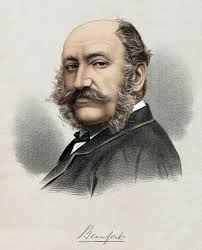

Badminton developed from earlier games like battledore and shuttlecock, which were played in ancient Greece, China, and India. The modern version was officially created when British army officers brought the game back to England. In 1873, it was introduced at a party held at the Duke of Beaufort’s home in Badminton House, which is how the sport got its name. Over time, the rules were formalized, equipment improved, and the game spread across Europe and Asia.
Badminton was first played in the mid-1800s in British India, where it was known as "Poona." British officers stationed there saw locals playing a game using a shuttlecock and rackets and began playing it themselves. The game was originally played outdoors on grass courts, and players used wooden rackets and feathered shuttlecocks. The rules were much simpler compared to today, with informal scoring systems and fewer restrictions on court size and gameplay.